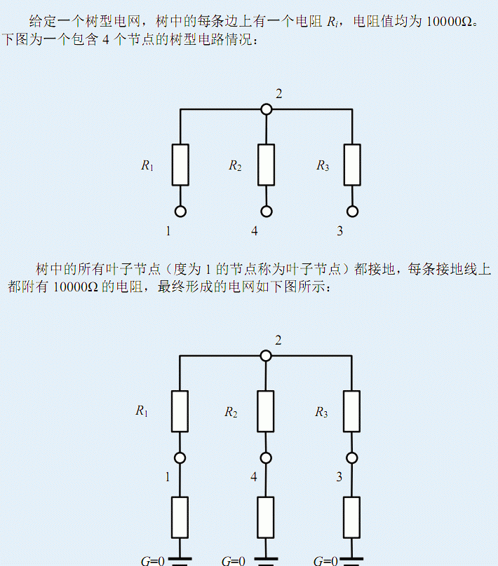
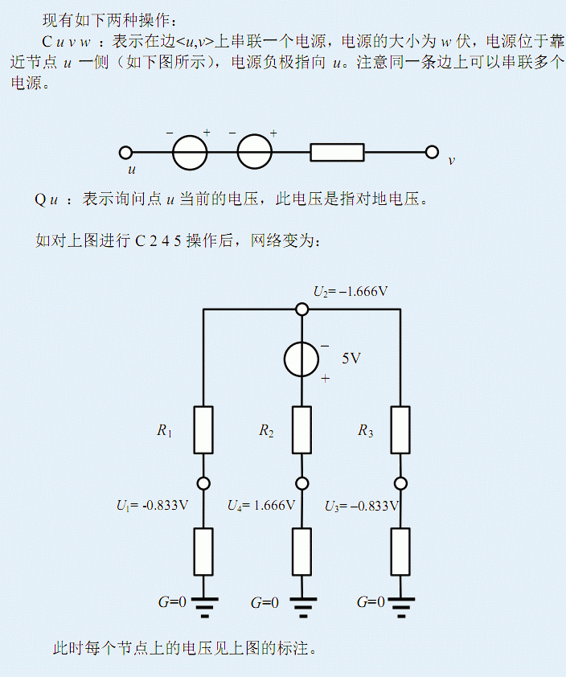
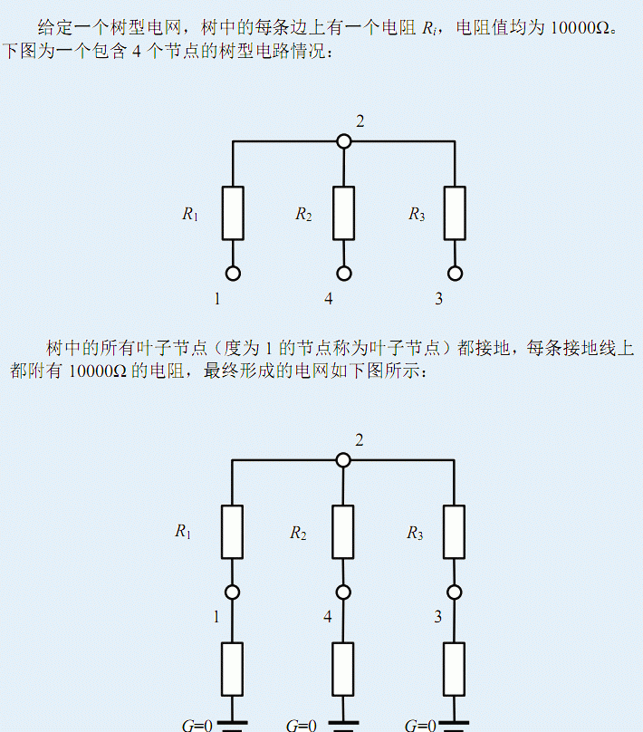
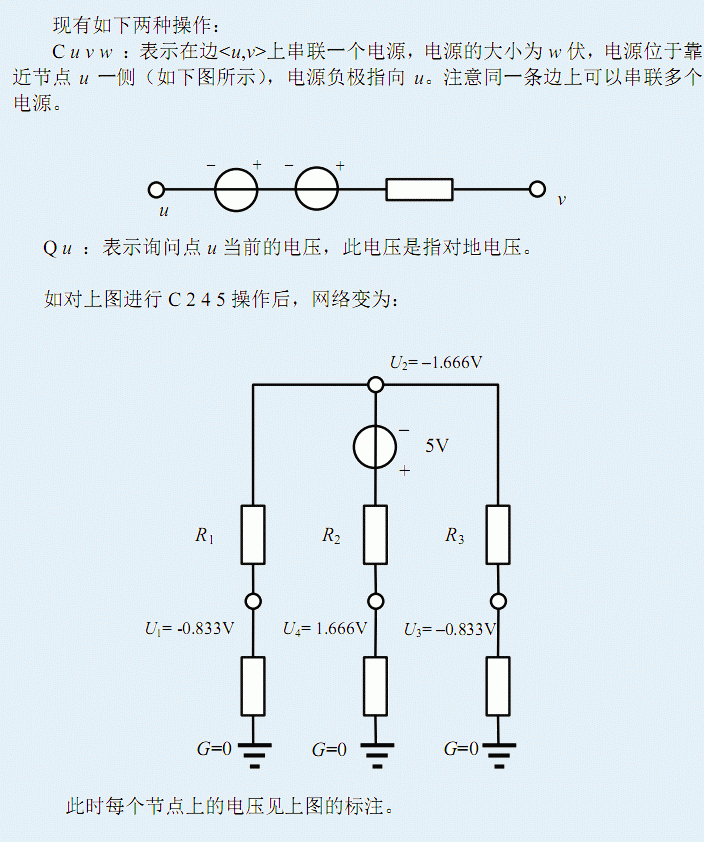
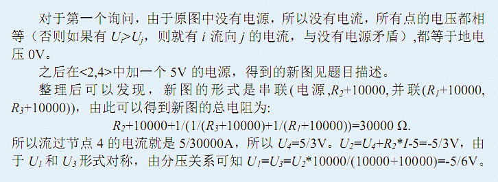

| F.A.Qs | Home | Discuss | ProblemSet | Status | Ranklist | Contest | 入门OJ | ModifyUser Xeonacid | Logout | 捐赠本站 |
|---|


第一行输入N,M分别表示树的节点数和操作
个数。接下来 N-1 行，每行两个数 u,v，表示有一条连接节点 u,v 的边，这条边上恰好包含一个电阻。 接下来 M 行，每行一个命令，格式见题目描述。
对于每个 Q 命令，输出一个数表示此刻该点的电压值。你可以输出任意多位的小数，只要你的答案和标准答案相差不超过10-3 就算 合法。

3 ≤ N,M ≤ 50000， 1 ≤ u,v ≤ n， 1 ≤ w ≤ 10，树中最长链的长
度不超过 50。